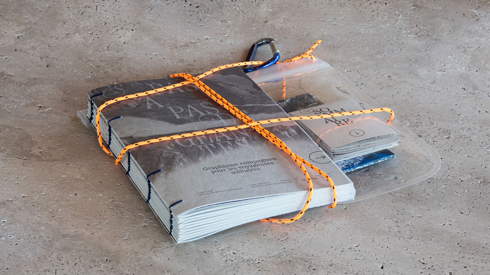
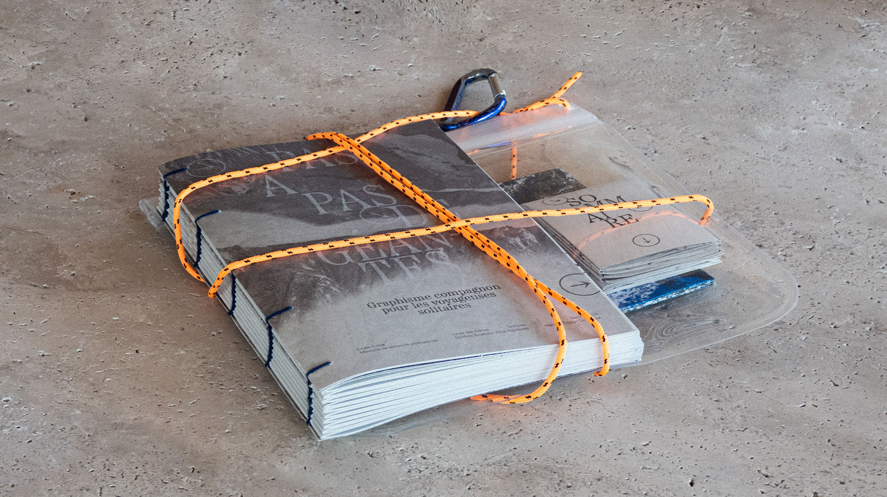
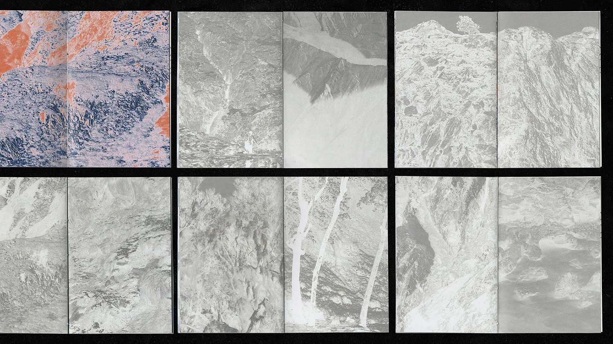
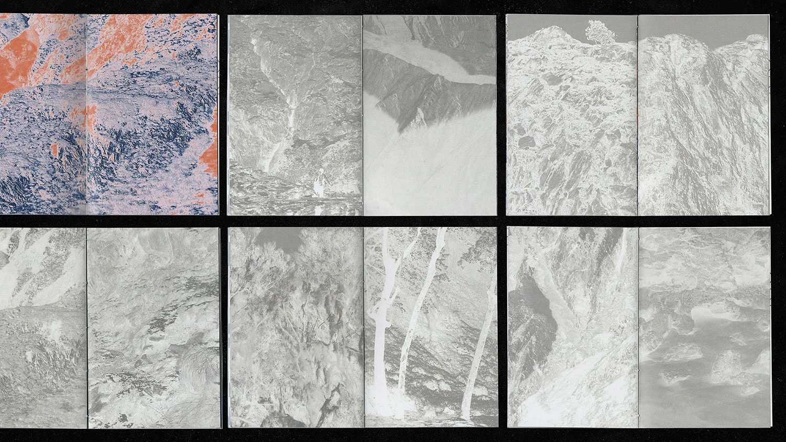
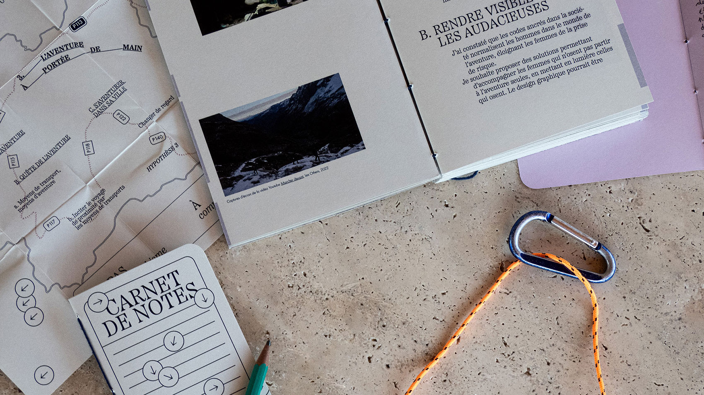
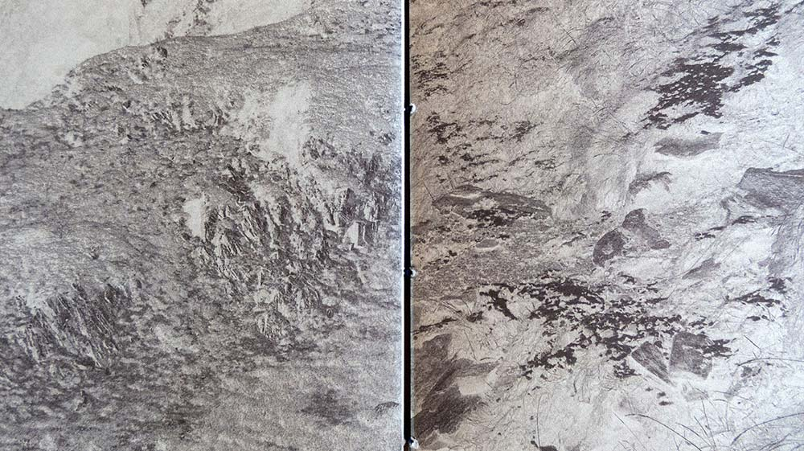
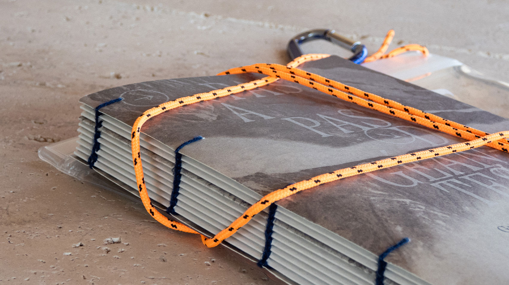
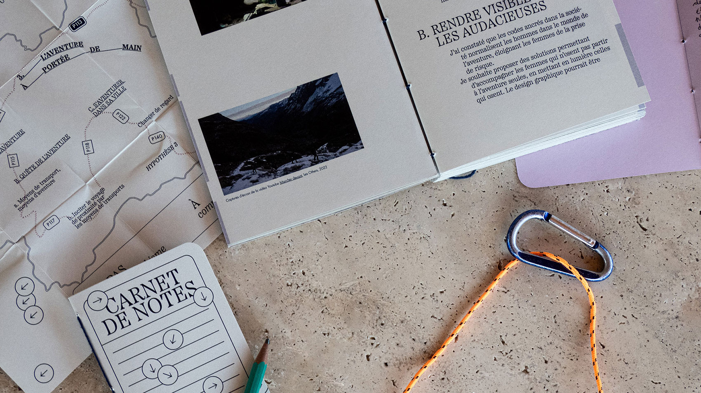
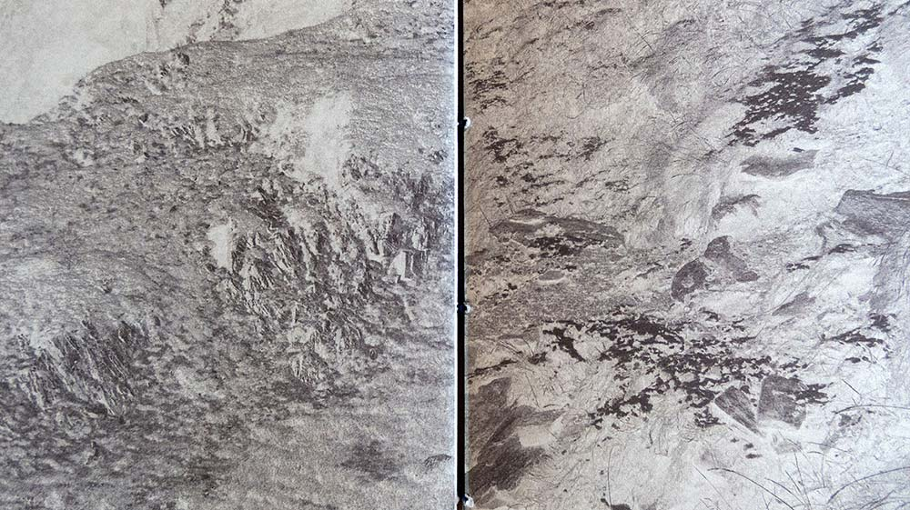
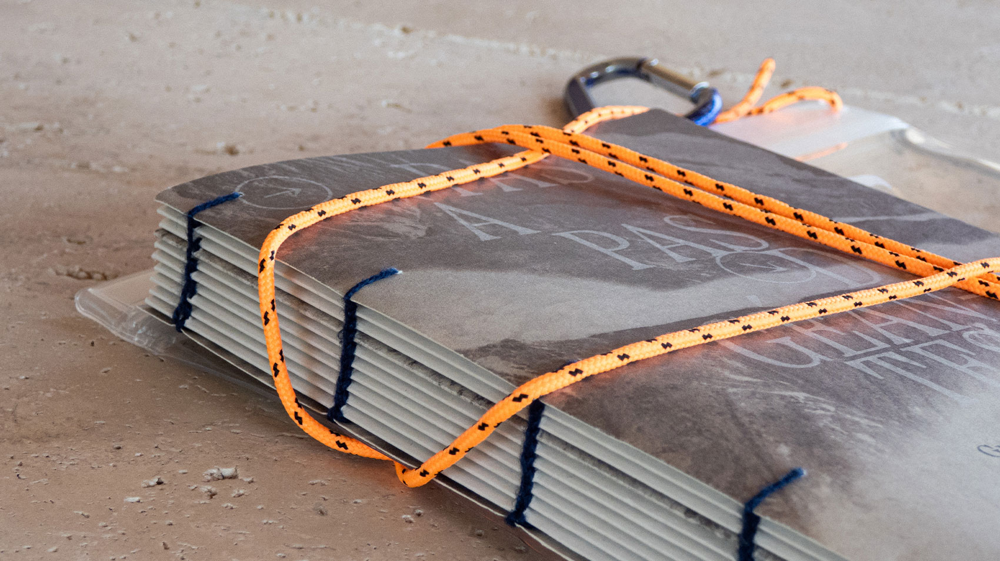

Ce journal de recherche questionne la place des voyageuses solitaires dans le monde de l’aventure. Le design graphique pourrait mettre en place des supports de communication permettant d’accompagner et ainsi de rassurer celles qui n’osent pas voyager seules, afin de préparer leur aventure au mieux. Comment le design graphique peut accompagner les citadines en soif d’aventure à s’émanciper des codes touristiques, afin de pratiquer différemment et de vivre pleinement le voyage en solitaire ? Comment cette discipline peut accompagner la voyageuse vers une expérience d’aventure qui prône la découverte, l’imprévu et l’errance ? Le format éditorial de ce journal de recherche est un livre de poche, facilement transportable en voyage et faisant référence aux guides touristiques. L’édition principale est accompagnée de ses annexes : sommaire (carte), avant propos et préambule (carnet) et carnet de notes ; le tout est assemblé dans une poche imperméable, protégeant l’édition de toutes intempéries (pluie, gras du sandwich…).
 


 

 




